概要
基于微信小程序轻快的特点，我们拟定了小程序界面设计指南和建议。 设计指南建立在充分尊重用户知情权与操作权的基础之上。旨在微信生态体系内，建立友好、高效、一致的用户体验，同时最大程度适应和支持不同需求，实现用户与小程序服务方的共赢。
一、友好礼貌
为了避免用户在微信中使用小程序服务时，注意力被周围复杂环境干扰，小程序在设计时应该注意减少无关的设计元素对用户目标的干扰，礼貌地向用户展示程序提供的服务，友好地引导用户进行操作。
1.重点突出
每个页面都应有明确的重点，以便于用户每进入一个新页面的时候都能快速地理解页面内容，在确定了重点的前提下，应尽量避免页面上出现其他干扰项影响用户的决策和操作。
反例示意
此页面的主题是查询，却添加了诸多与查询不相关的业务入口，与用户的预期不符，易造成用户的迷失。
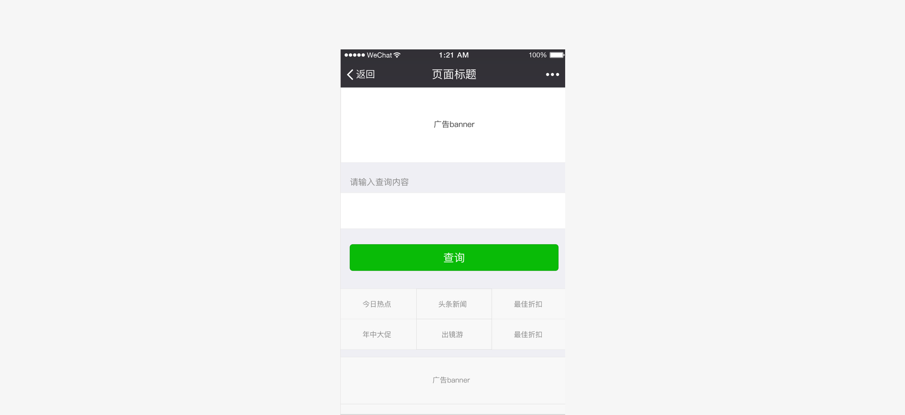
纠正示意
去掉任何与用户目标不相关的内容，明确页面主题，在技术和页面控件允许的前提下提供有助于用户目标的帮助内容，比如最近搜索词，常用搜索词等。

反例示意
操作没有主次，让用户无从选择
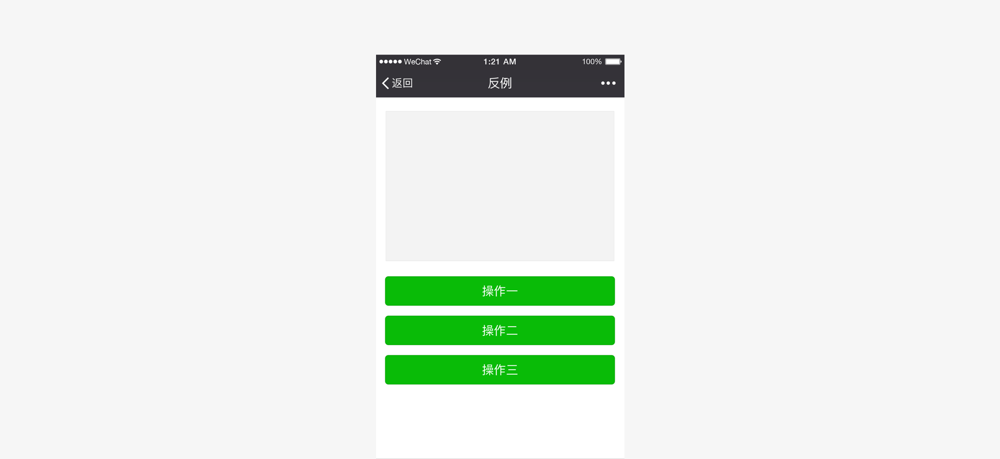
纠正示意
首先要避免并列过多操作让用户选额，在不得不并列多个操作时，需区分操作主次，减轻用户的选择难度。
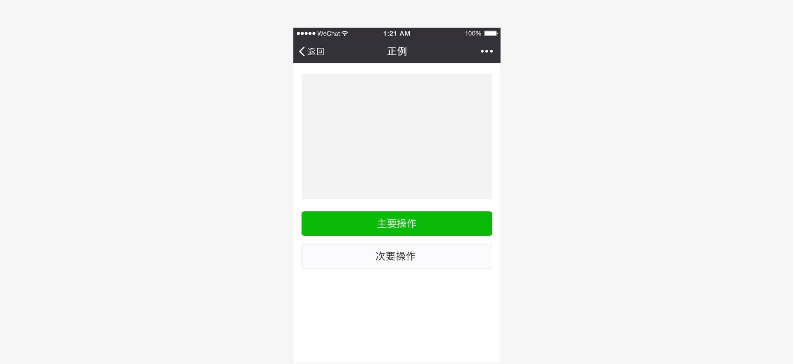
2.流程明确
为了让用户顺畅地使用页面，在用户进行某一个操作流程时，应避免出现用户目标流程之外的内容而打断用户。
反例示意
用户本打算进行搜索，在进入页面时却被突如其来的抽奖弹窗所打断；对于抽奖没有兴趣的用户是非常不友好的干扰； 而即便有部分用户确实被“诱人”的抽奖活动所吸引，离开主流程去抽奖之后可能就遗忘了原本的目标，进而失去了对产品真正价值的利用和认识。
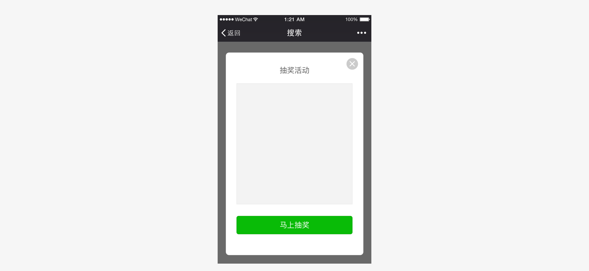
二、清晰明确
一旦用户进入我们的小程序页面，我们就有责任和义务清晰明确地告知用户身在何处、又可以往何处去，确保用户在页面中游刃有余地穿梭而不迷路，这样才能为用户提供安全的愉悦的使用体验。
1.导航明确，来去自如
导航是确保用户在网页中浏览跳转时不迷路的最关键因素。导航需要告诉用户，我在哪，我可以去哪，如何回去等问题。首先在微信系统内的所有小程序的全部页面，均会自带微信提供的导航栏，统一解决我在哪，如何回去的问题。在微信层级导航保持体验一致，有助于用户在微信内形成统一的体验和交互认知，无需在各小程序和微信切换中新增学习成本或改变使用习惯。
微信导航栏
微信导航栏，直接继承于客户端，除导航栏颜色之外，开发者无需亦不可以对其中的内容进行自定义。但开发者需要规定小程序各个页面的跳转关系，让导航系统能够以合理的方式工作。
微信导航栏分为导航区域、标题区域以及操作区域。其中导航区控制程序页面进程。目前导航栏分深浅两种基本配色，在iOS和Android展示有所不同，如下图所示：
导航区（iOS）
导航区通常只有一个操作，即返回上一级界面。开发者可定义其内容，不可对样式进行修改
导航区（Android）
系统导航左侧唯一的操作为“离开小程序，回到微信，程序后台运行”。而点击安卓手机自带的硬件返回键时，则为返回上一级页面。
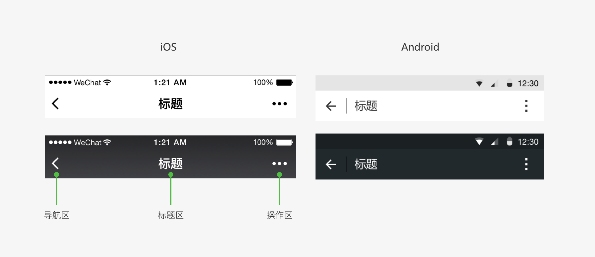
微信导航栏自定义颜色规则（iOS和Android）
小程序导航栏支持基本的背景颜色自定义功能，选择的颜色需要在满足可用性前提下，和谐搭配微信提供的两套主导航栏图标。建议参考以下选色效果：
选色方案示例
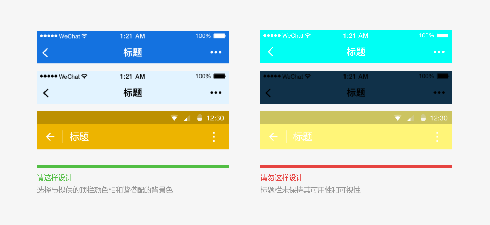
页面内导航
开发者可根据自身功能设计需要在页面内添加自有导航。并保持不同页面间导航一致。但是受限于手机屏幕尺寸的限制，小程序页面的导航应尽量简单，若仅为一般线性浏览的页面建议仅使用微信导航栏即可。
微信控件库提供标签分页（Tab）导航供开发者选择。标签分页栏可固定在页面顶部或者底部，便于用户在不同的分页间做切换。为确保点击区域，标签不得超过4项。一个页面也不应出现一组以上的标签分页栏。
标签分页栏选中态默认为100%实色，未选中态带有60%，其中选中态颜色可自定义。在自定义颜色选择中，务必注意保持分页栏标签的可用性、可视性和可操作性。 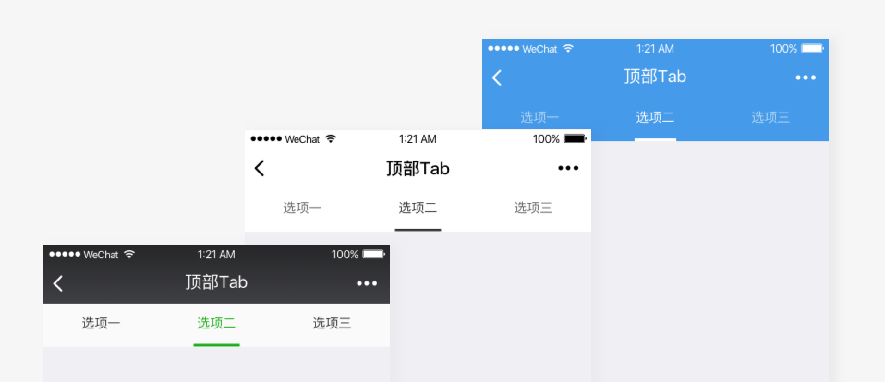
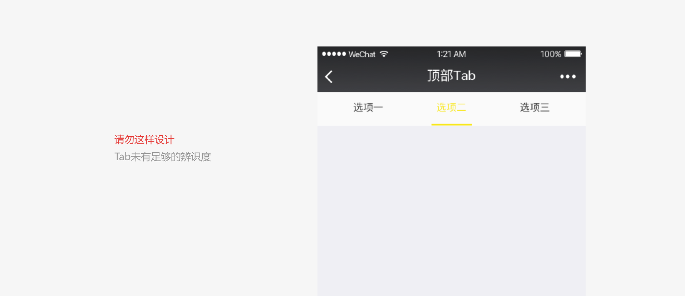
2.减少等待，反馈及时
页面的过长时间的等待会引起用户的不良情绪，使用微信小程序项目提供的技术已能很大程度缩短等待时间。即便如此，当不可避免的出现了加载和等待的时候，需要予以及时的反馈以舒缓用户等待的不良情绪。
启动页加载
小程序启动页是小程序在微信内容一定程度上展现品牌特征的页面之一。本页面将突出展示小程序品牌特征和加载状态。启动页除品牌标志（Logo）展示外，页面上的其他所有元素如加载进度指示，均由微信统一提供且不能更改，无需开发者开发。
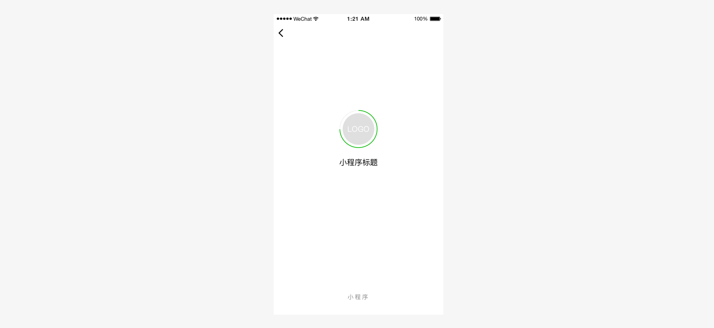
页面下拉刷新加载
在微信小程序内，微信提供标准的页面下拉刷新加载能力和样式。 开发者可自定义需要通过下拉交互完成刷新的页面，此类交互微信将提供标准能力和样式。在样式上，刷新图标与下拉标示配色已捆绑，分为深浅两套方案，开发者在使用时，应注意头部文字、下拉标识与刷新图标的和谐统一。当用户在该类页面做出下拉交互时，出现微信小程序页面标准加载动画。开发者无需自行开发样式
开发者未定义标签分页(tab)
若定义该页面可通过下拉动作刷新，则刷新后加载状态提示与小程序品牌展示区出现在标题栏之下，页面顶部。

开发者定义了标签分页(tab)
并定义该Tab下的内容页面可通过下拉动作刷新，则刷新后加载状态提示与小程序品牌展示区出现在顶部Tab之下，且仅刷新当前页面内容。开发者暂无法自行定义此加载效果
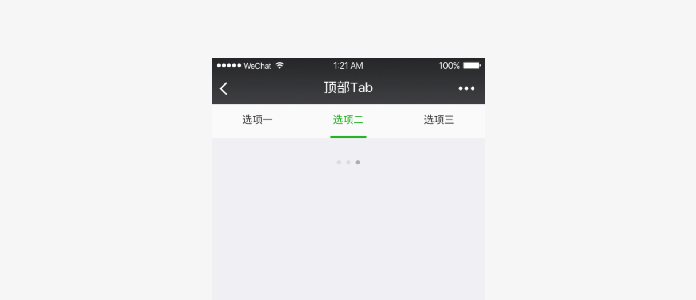
深浅两套下拉样式
微信下拉提示用于给用户明确的小程序归属者，防止造假与作弊。此处标示提供深浅两套方案，文字颜色不可自定义，开发者在自定义背景色时，应注意保证下拉标示的辨识度。iOS和Android配色方案相同如下展示。
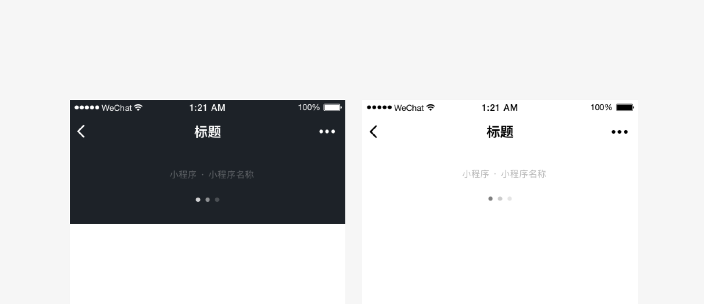
微信下拉标示错误使用案例
请避免以下错误使用情况，确保信息的可见性和页面的可用性
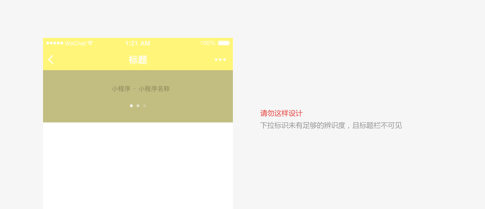
页面内加载反馈
开发者可在小程序里自定义页面内容的加载样式。建议不管是使用在局部还是全体，自定义加载样式都应该尽可能简洁，并使用简单动画告知用户加载过程。 开发者也可以使用微信提供的，统一的页面加载样式，如图中例所示。
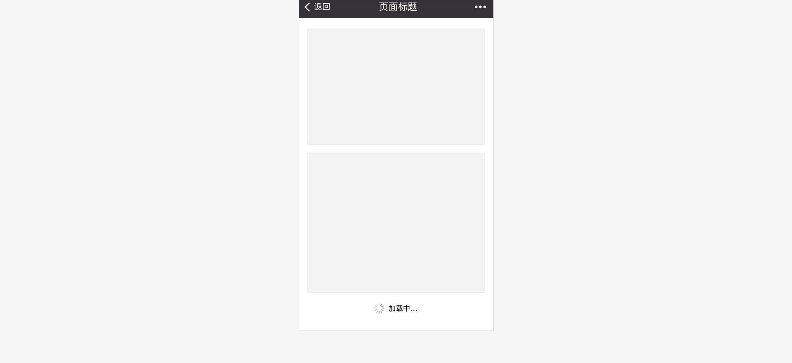
模态加载
模态的加载样式将覆盖整个页面的，由于无法明确告知具体加载的位置或内容将可能引起用户的焦虑感，因此应谨慎使用。除了在某些全局性操作下不要使用模态的菊花。
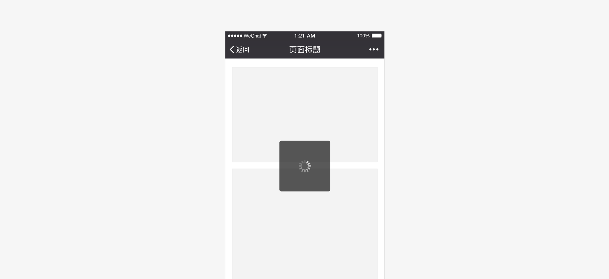
局部加载反馈
即只在触发加载的页面局部进行反馈，这样的反馈机制更加有针对性，页面改动小，是微信推荐的反馈方式。例如：

加载反馈注意事项
- 若载入时间较长,应提供取消操作,并使用进度条显示载入的进度。
- 载入过程中,应保持动画效果 ; 无动画效果的加载很容易让人产生该界面已经卡死的错觉。
- 不要在同一个页面同时使用超过1个加载动画。
结果反馈
除了在用户等待的过程中需予以及时反馈外，对操作的结果也需要予以明确反馈。根据实际情况，可选择不同的结果反馈样式。对于页面局部的操作，可在操作区域予以直接反馈，对于页面级操作结果，可使用弹出式提示（Toast）、模态对话框或结果页面展示。
页面局部操作结果反馈
对于页面局部的操作，可在操作区域予以直接反馈，例如点击多选控件前后如下图。对于常用控件，微信设计中心将提供控件库，其中的控件将提供完整操作反馈。
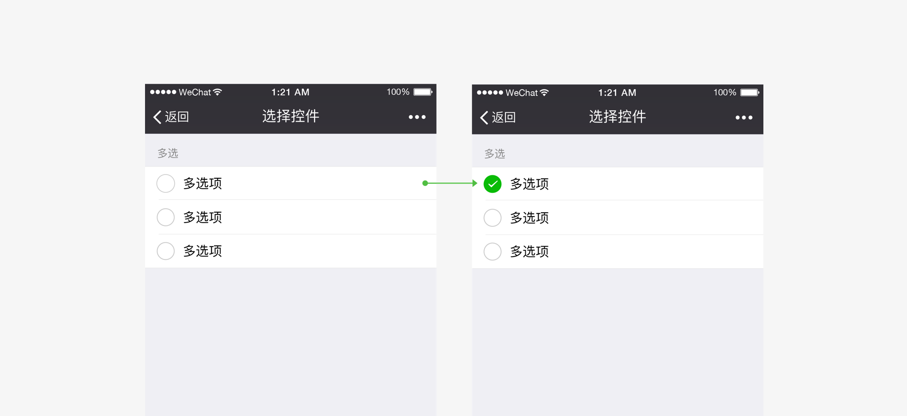
页面全局操作结果——弹出式提示（Toast）
弹出式提示（Toast）适用于轻量级的成功提示，1.5秒后自动消失，并不打断流程，对用户影响较小，适用于不需要强调成功状态的操作提醒。特别注意该形式不适用于任何错误提醒。
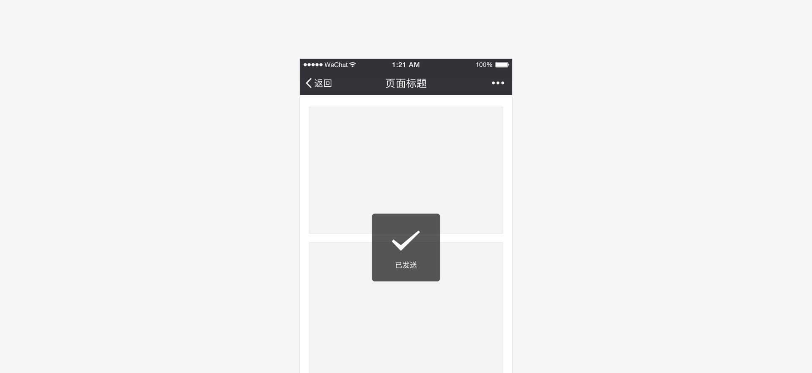
页面全局操作结果——模态对话框
对于需要用户明确知晓的操作结果状态可通过模态对话框来提示，并可附带下一步操作指引。

页面全局操作结果—结果页
对于操作结果已经是当前流程的终结的情况，可使用操作结果页来反馈。这种方式最为强烈和明确的告知用户操作已经完成，并可根据实际情况给出下一步操作的指引。
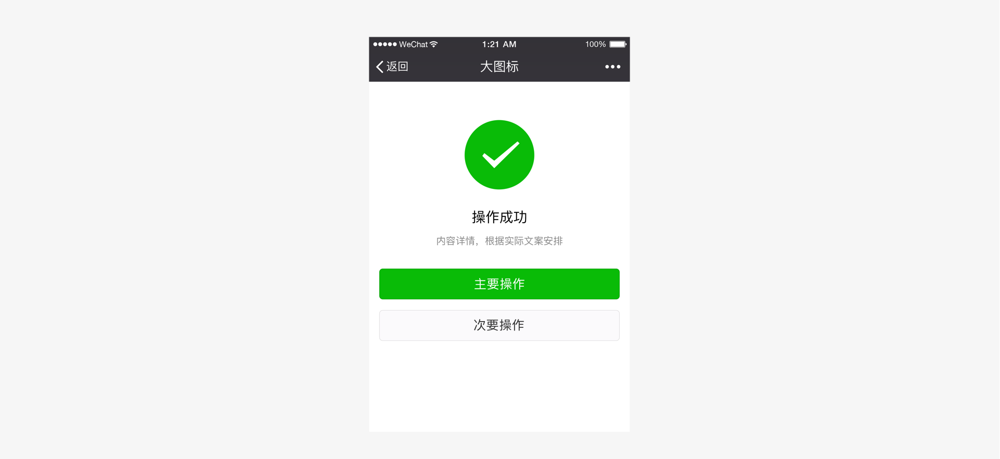
3.异常可控，有路可退
在设计任何的任务和流程时，异常状态和流程往往容易被忽略，而这些异常场景往往是用户最为沮丧和需要帮助的时候，因此需要格外注意异常状态的设计，在出现异常时予以用户必要的状态提示，并告知解决方案，使其有路可退。
要杜绝异常状态下，用户莫名其妙又无处可去，卡在某一个页面的情况。2.2中所提到的弹窗和结果页面都可作为异常状态的提醒方式。除此之外，在表单页面中尤其是表单项较多的页面中，还应明确指出出错项目，以便用户修改。
异常状态——表单出错
表单报错，在表单顶部告知错误原因，并标识出错误字段提示用户修改

三、便捷优雅
从PC时代的物理键盘鼠标到移动端时代手指，虽然输入设备极大精简，但是手指操作的准确性却大大不如键盘鼠标精确。为了适应这个变化，需要开发者在设计过程中充分利用手机特性，让用户便捷优雅的操控界面。
1.减少输入
由于手机键盘区域小且密集，输入困难的同时还易引起输入错误，因此在设计小程序页面时因尽量减少用户输入，利用现有接口或其他一些易于操作的选择控件来改善用户输入的体验。
减少输入，巧用接口
例如下图中，在添加银行卡时，采用摄像头识别接口来帮助用户输入。除此之外微信团队还对外开放例如地理位置接口等多种微信小程序接口 ，充分利用这些接口将大大提高用户输入的效率和准确性，进而优化体验。
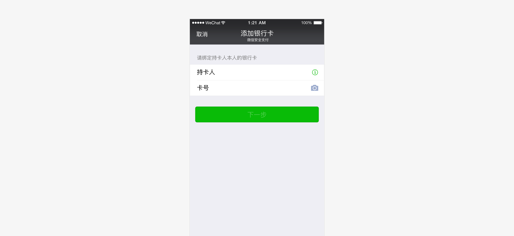
除了利用接口外，在不得不让用户进行手动输入时，应尽量让用户做选择而不是键盘输入。一方面，回忆易于记忆，让用户在有限的选项中做选择通常来说是容易于完全靠记忆输入；另一方面，仍然是考虑到手机键盘密集的单键输入极易造成输入错误。 例如图中，在用户搜索时提供搜索历史快捷选项将帮助用户快速进行搜索，而减少或避免不必要是键盘输入。
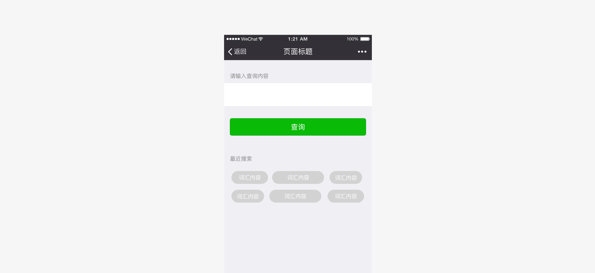
2.避免误操作
因为在手机上我们通过手指触摸屏幕来操控界面，手指的点击精确度远不如鼠标，因此在设计页面上需点击的控件时，需要充分考虑到其热区面积，避免由于可点击区域过小或过于密集而造成误操作。当简单的将原本在电脑屏幕上使用的界面不做任何适配直接移植到手机上时，往往就容易出现这样的问题。由于手机屏幕分辨率各不相同，因此最适宜点击像素尺寸也不完全一致，但换算成物理尺寸后大致是在7mm-9mm之间。在微信提供的标准组件库中，各种控件元素均已考虑到了页面点击效果以及不同屏幕的适配，因此再次推荐使用或模仿标准控件尺寸进行设计。
3.利用接口提升性能
微信设计中心已推出了一套网页标准控件库，包括sketch设计控件库和Photoshop设计控件库，后续还将完善小程序组件，这些控件都已充分考虑了移动端页面的特点，能够保证其在移动端页面上的可用性和操作性能；同时微信开发团队也在不断完善和扩充微信小程序接口，并提供微信公共库，利用这些资源不但能够为用户提供更加快捷的服务，而且对页面性能的提高有极大作用，无形之中提升了用户体验。
四、统一稳定
除了以上所提到的种种原则，建议接入微信的小程序还应该时刻注意不同页面间的统一性和延续性，在不同的页面尽量使用一致的控件和交互方式。
统一的页面体验和有延续性的界面元素都将帮助用最少的学习成本达成使用目标，减轻页面跳动所造成的不适感。正因如此，小程序可根据需要使用微信提供的标准控件，以达到统一稳定的目的。
五、视觉规范
为方便设计师进行设计，微信提供一套可供Web设计和小程序使用的基础控件库；同时提供方便开发者调用的资源。
-
We-UI_PS组件库
下载
预览地址：https://weui.io
1.字体规范
微信内字体的使用与所运行的系统字体保持一致，常用字号为20, 18, 17, 16,14 13, 11(pt)，使用场景具体如下：
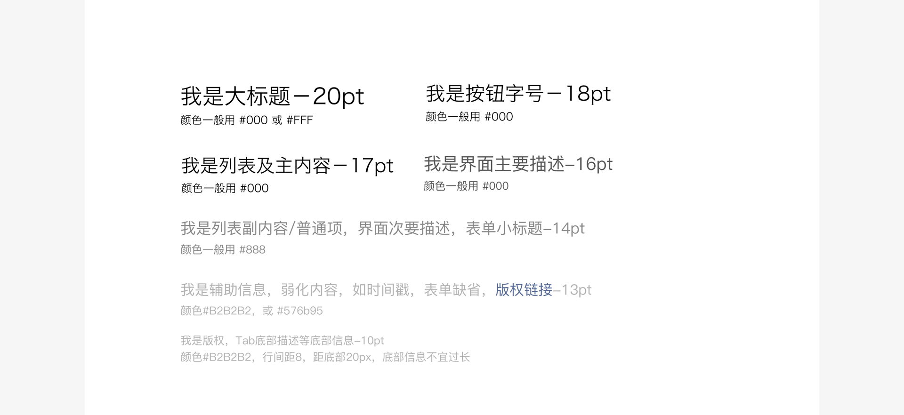
字体颜色

主内容 Black 黑色，次要内容 Grey 灰色；时间戳与表单缺省值 Light 灰色；大段的说明内容而且属于主要内容用 Semi 黑；
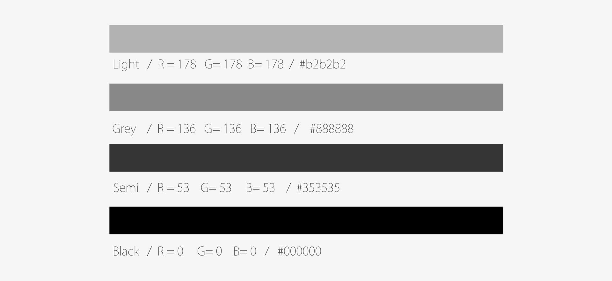
蓝色为链接用色，绿色为完成字样色，红色为出错用色 Press与 Disable状态分别降低透明度为20%与10%；

2.列表视觉规范
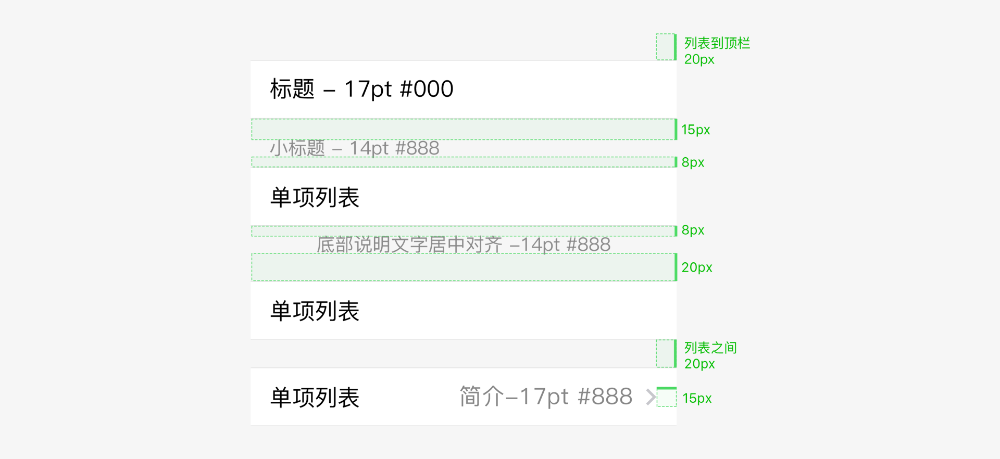
3.表单输入视觉规范

4.按钮使用原则
列表外按钮上文字标准
按钮高度为44px下使用: 颜色 ＃000000 / ＃353535 字号 18pt
可点状态下文字调整透明度为60%
不可点状态下文字调整透明度为30%
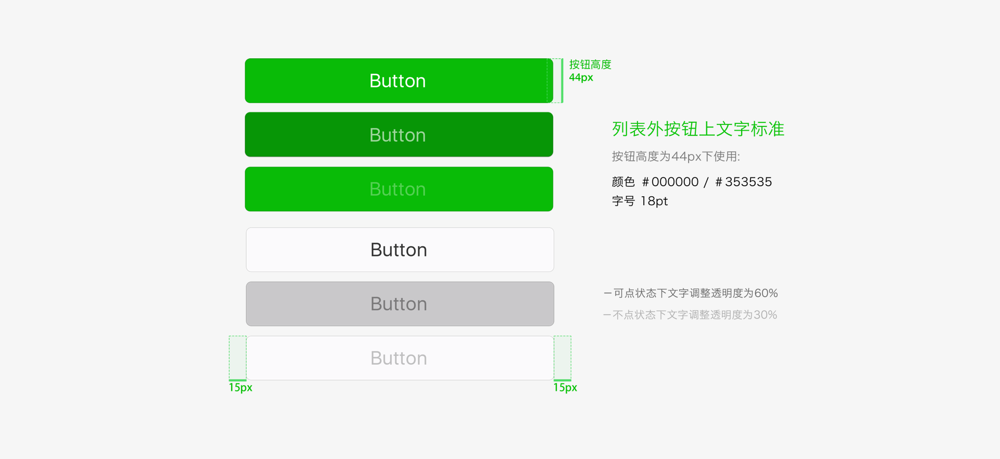
列表外按钮上文字标准
按钮高度为25px下使用: 颜色 ＃000000 / ＃353535 字号 14pt
页面线性按钮上文字标准
按钮高度为35px下使用: 颜色 ＃09BB07 / ＃353535 字号 16pt
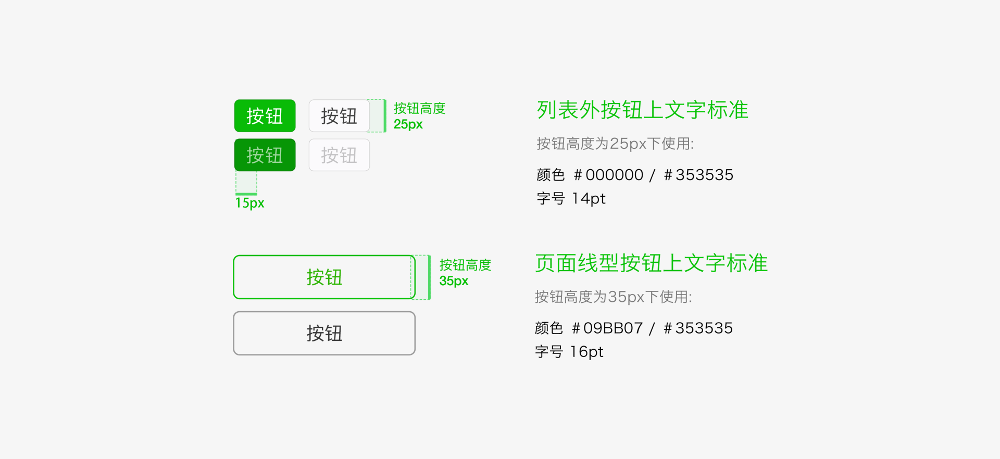
5.图标使用原则
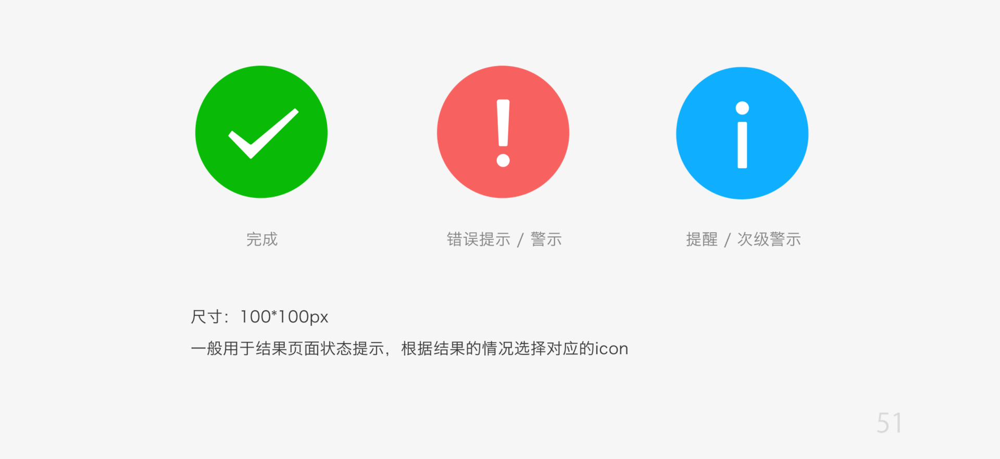